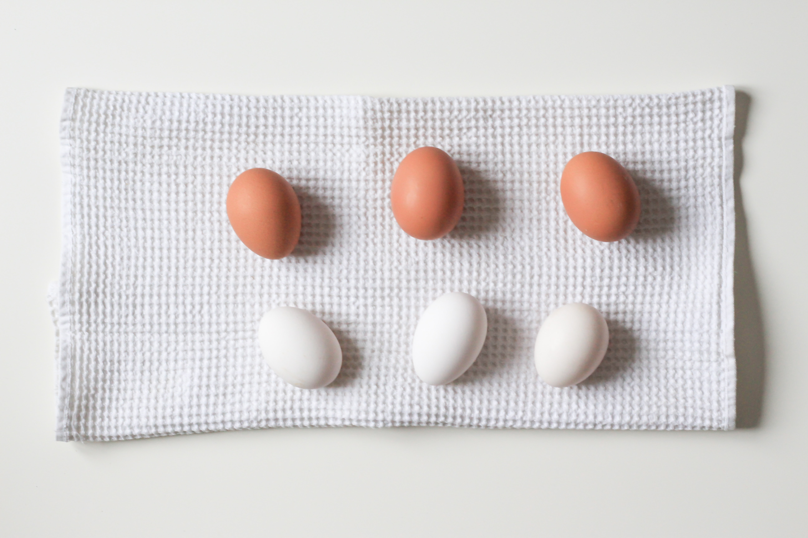

저탄수화물 고지방(저탄고지) 다이어트, LCHF 다이어트 또는 키토제닉(Ketogenic) 다이어트는 식이요법의 일종으로, 단순히 지방을 많이 먹는 것이 아니라 열량의 총 섭취량은 유지하면서 섭취 비중 가운데 탄수화물(당질)이 들어간 음식을 줄이고 지방이 들어간 음식을 늘려, 체내 인슐린 저항성을 낮추는 것을 목표로 한다.
저탄고지의 원리는 탄수화물을 적게 혹은 0에 가깝게 먹어주어 제 2의 에너지 고윽ㅂ처인 지방을 태워 에너지를 공급 받는다는 원리다. 때문에 고탄저지보다 저탄고지가 짧은 시간에 체지방율을 줄이는데 굉장히 효과적인 방법이다. 그리고 아무래도 고기를 많이 먹어주는 거라 채식보다는 유지하기가 훨씬 쉽고 포만감 유지도 오래가기 때문에 다이어터들에게 사랑을 받는 방법 중 하나다. 정말 좋다. 진입장벽이 잔디수준이다.